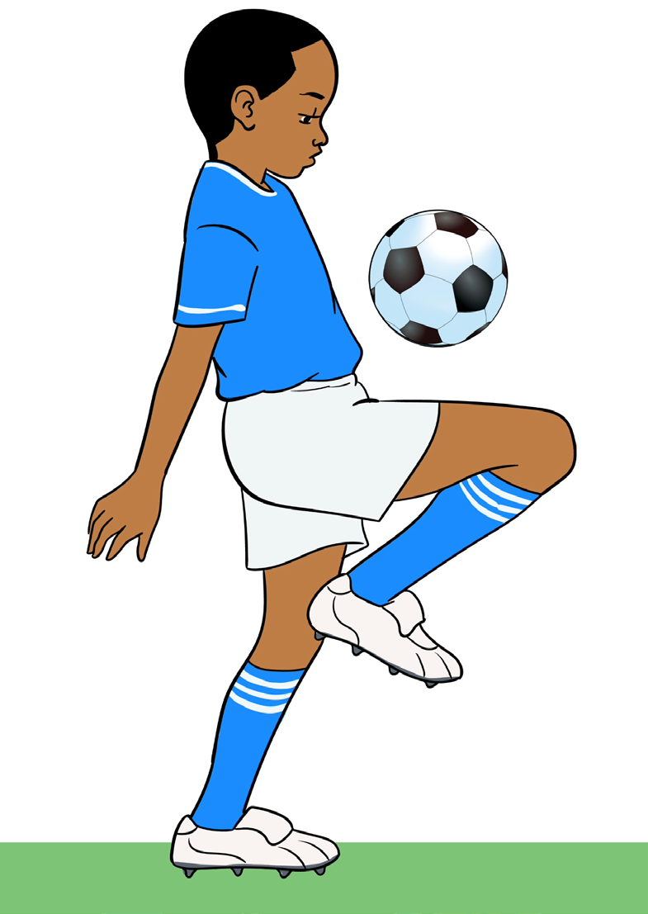

(iv) As the ball arrives, withdraw the receiving thigh surface downward; and
(v) Drop the ball at your feet or ground within a range of control.

Activity 4.4
Using various drills, practise ball control by thigh repetitively to master the skill.
Question:
What happens if you fail to keep eyes on the ball when performing ball control by thigh?
Controlling by chest
The balls that arrives at the chest level can be trapped and controlled by the chest.
For a better performance of ball control by chest do as follows:
(i) Anticipate and quickly reach near the dropping point of the ball;
(ii) Stay in a ready stance with feet shoulder-width apart;
(iii) Lean back slightly, arms out to your sides, keep your shoulders towards the coming ball, as shown in Figure 4.5;